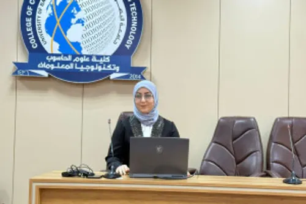
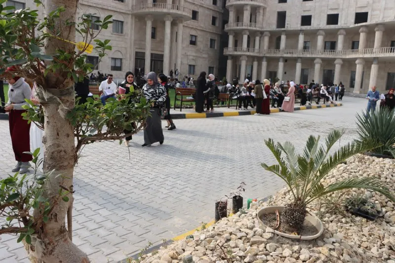

صناعة الابتسامة عبر برنامج أكاديمي متميز يجمع بين العلوم الطبية الأساسية والمهارات السريرية المتقدمة
تعتبر كلية طب الأسنان صرحاً علمياً متخصصاً في تطوير المهارات الفنية والعلمية لدى أطباء الأسنان. نحن نركز على التدريب العملي المكثفตั้งแต่ المراحل المبكرة لإعداد أطباء قادرين على تشخيص ومعالجة جميع أمراض الفم والأسنان بمنتهى الحرفية.
تطوير مهنة طب الأسنان في المجتمع من خلال تعليم رصين، بحث علمي هادف، وعيادات تعليمية تخدم المواطنين بشكل مباشر.
عميد الكلية - جراحة الوجه والفكين
رئيس قسم تقويم الأسنان
المعالجة اللبية
طب أسنان الأطفال
تستغرق دراسة البكالوريوس 5 سنوات وتبدأ بالعلوم الطبية الأساسية وتنتهي بالممارسة السريرية اليومية.
| السنة الدراسية | عدد الساعات المعتمدة | أبرز المقررات |
|---|---|---|
| المرحلة الأولى | 36 ساعة | تشريح الأسنان، بايولوجي، كيمياء طبية، فيزياء طبية |
| المرحلة الثانية | 38 ساعة | صناعة الأسنان، مواد الأسنان، التشريح العام، الأنسجة العامة |
| المرحلة الثالثة | 42 ساعة | المعالجة التحفظية، الجراحة الصغرى، أشعة الأسنان، أمراض الفم |
| المرحلة الرابعة | 44 ساعة | تقويم الأسنان، طب أسنان الأطفال، أمراض اللثة، الجراحة الكبرى |
| المرحلة الخامسة | 46 ساعة | تطبيق سريري كامل في كافة الفروع، صناعة الأسنان المتقدمة |

تستقبل مئات المراجعين يومياً لمعالجتهم من قبل طلبة المراحل المنتهية مجاناً.

مجهز بأفضل أفران الخزف وتقنيات الصب والتصميم الرقمي.